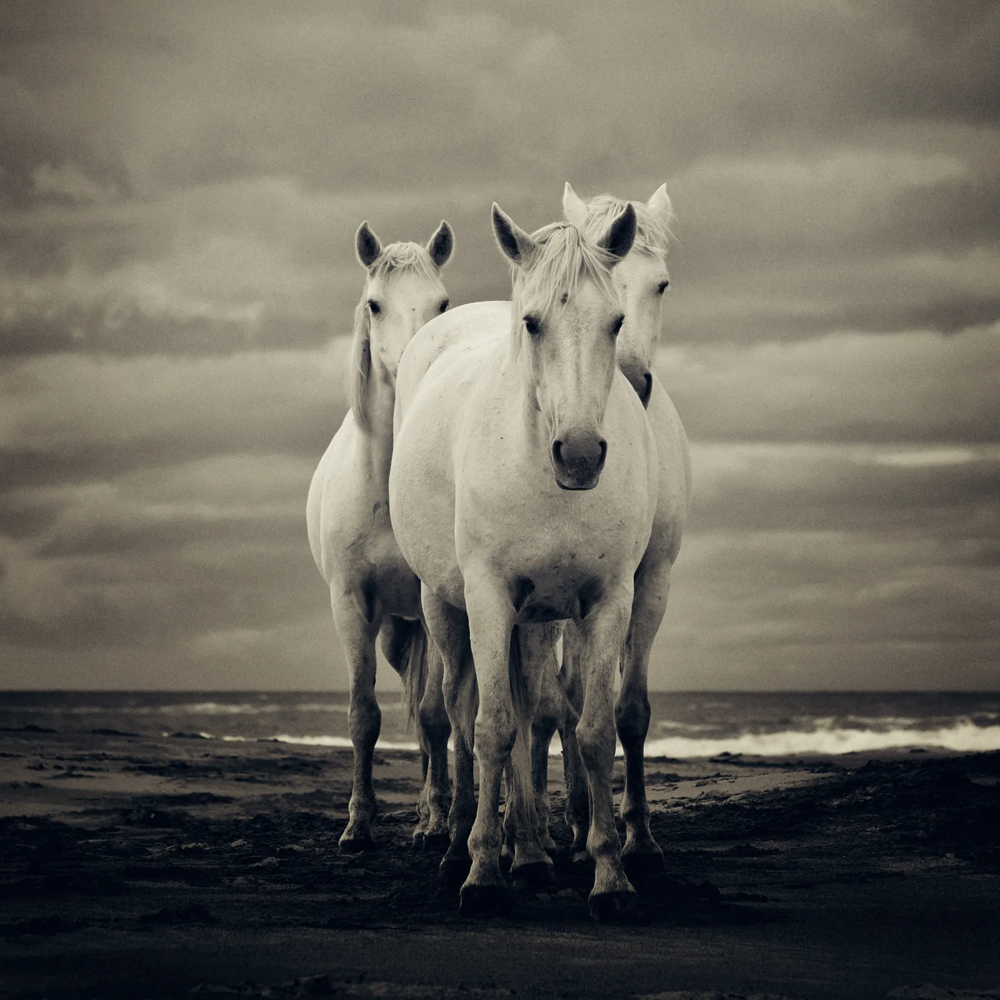
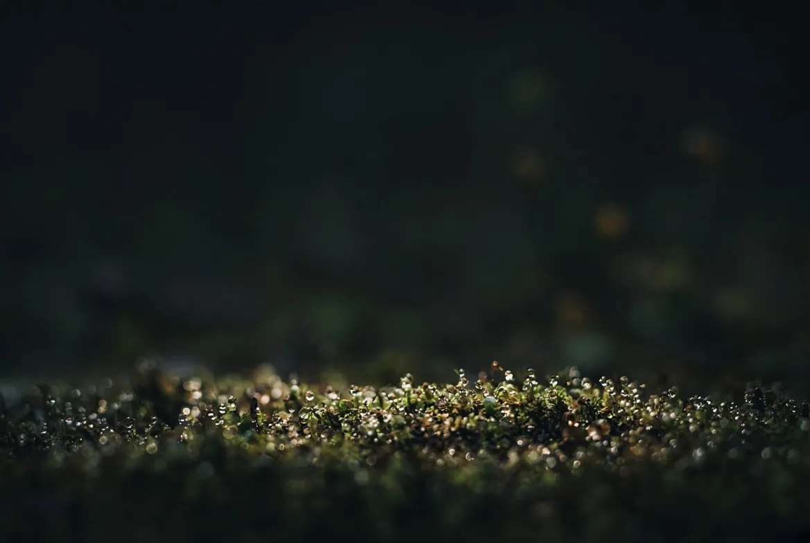

9 photographiesTirages d’art numérotés · prix sur demande

N° 01Titre à compléterAnnée, technique et format : à compléterTirage d’art numéroté · prix sur demandeN° 02Titre à compléterAnnée, technique et format : à compléterTirage d’art numéroté · prix sur demandeN° 03Titre à compléterAnnée, technique et format : à compléterTirage d’art numéroté · prix sur demandeN° 04Titre à compléterAnnée, technique et format : à compléterTirage d’art numéroté · prix sur demandeN° 05Titre à compléterAnnée, technique et format : à compléterTirage d’art numéroté · prix sur demandeN° 06Titre à compléterAnnée, technique et format : à compléterTirage d’art numéroté · prix sur demandeN° 07Titre à compléterAnnée, technique et format : à compléterTirage d’art numéroté · prix sur demandeN° 08Titre à compléterAnnée, technique et format : à compléterTirage d’art numéroté · prix sur demandeN° 09Titre à compléterAnnée, technique et format : à compléterTirage d’art numéroté · prix sur demande
01 / 09Cliquer pour la loupe et la vue au mur
Expositions et distinctions
La série dans le monde
Nov. 2020Premier prix du concours Olympus / Wilderness Safaris (nature sauvage)
Sept. 2021Festival Spot Nature, Jardins suspendus, Le Havre
Oct. 2021Rencontres photographiques du Prieuré, Salaise-sur-Sanne
Nov. 2021Photomenton, Menton
Déc. 2021Silver Award, Budapest International Foto Awards (BIFA)
Fév. 2022Le petit livre des Kami, zine tiré à 20 exemplaires

Tirage d’art
Demander un tirage
Chaque photographie de la série peut être tirée en édition numérotée. Laurent répond avec les formats, les papiers et le prix.